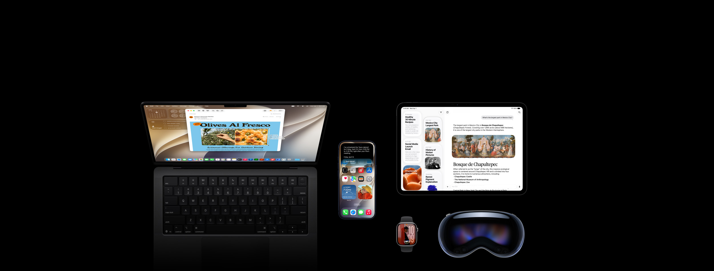

WWDC 2026 全景报告 Siri AI 进入开发者测试，OS 27 重建可靠性与平台能力
基于 Apple Newsroom、Apple Developer、六大操作系统产品页及权威媒体报道，拆解 Siri AI、开发者 AI 栈、OS 27、平台治理和真实可用性边界。

目录
01. 执行摘要
六个核心结论
-
本次 Keynote 聚焦软件与开发者平台，未公布新硬件。 Apple 发布了 iOS 27、iPadOS 27、macOS 27 Golden Gate、watchOS 27、visionOS 27 和 tvOS 27，并将主线放在 Siri AI、下一代 Apple Intelligence、儿童安全、性能与开发工具上。[S03][S12][S19]
-
Siri AI 已经出现，但尚未完成大众交付。 6 月 8 日开放的是 iOS 27、iPadOS 27、macOS 27、visionOS 27 上的开发者测试。watchOS 27 要等后续 beta。消费者要到 2026 年稍后才能获得英语 beta，Apple 没有承诺它会随秋季 OS 27 正式版同步稳定发布。[S03][S04]
-
Apple 的 AI 叙事从“一个助手”升级为“系统平台”。 Siri AI 连接个人上下文、屏幕内容、Spotlight 语义索引、App Intents、应用操作、网页知识、端侧模型和 Private Cloud Compute。对开发者而言，Foundation Models、Language Model protocol、Core AI、Evaluations、MLX 和 Xcode 代理共同构成更完整的 AI 开发栈。[S04][S13][S16][S17]
-
可靠性被放回发布核心。 Apple 同时修正 Liquid Glass 可读性、搜索、邮件排序、网络切换、AirDrop、照片载入、应用启动和 iPad 外置存储性能。TechCrunch 对 Keynote 顺序的观察有参考价值：Apple 先谈修复，再谈 Siri，说明其需要先恢复基础体验的可信度。[S03][S07][S08][S09][S23]
-
可用性将高度分层。 OS 27 的升级范围、Apple Intelligence 的硬件门槛、Siri AI 的测试状态、最强端侧模型的设备范围、语言与地区限制是五套不同条件。中国暂时无法使用新 Siri AI 和其他新 Apple Intelligence 功能，欧盟的 iOS 与 iPadOS 首发也暂不提供 Siri AI。[S03][S04]
-
App Store 和儿童安全属于平台级更新。 Apple 把治理范围延伸到儿童账户、网站与联系人审批、暴力内容干预、应用分类、订阅组织化、跨开发者套餐和留存运营。这些变化会直接影响产品设计、增长、审核与商业模式。[S05][S06]
最值得记住的数字
| 数字 | 含义 | 证据 |
|---|---|---|
| 6 月 8 日至 12 日 | WWDC26 举行时间 | [S01][S02] |
| 超过 1,000 人 | Apple Park 现场开发者、设计师与学生规模 | [S02] |
| 350 / 50 | Swift Student Challenge 获奖者 / Distinguished Winners | [S02] |
| 超过 100 个 | Apple 官方描述的视频会话规模 | [S01][S02] |
| 133 个 | 6 月 9 日对 WWDC26 视频索引页的去重链接计数 | [S18] |
| 30% / 70% / 80% | Apple 宣称的应用启动、照片载入、AirDrop 最高提升 | [S03] |
| 5 倍 | iPad 浏览和传输外置盘文件的最高提升 | [S03][S08] |
| 200 万次 | Private Cloud Compute 模型优惠资格涉及的首次下载量上限 | [S16] |
02. 大会事实与时间边界
Apple 于 3 月 23 日宣布 WWDC26 在 6 月 8 日至 12 日举行，全球线上开放，并在 6 月 8 日于 Apple Park 举办特别活动。5 月 18 日公布的正式日程显示，Keynote 于太平洋时间 6 月 8 日上午 10 时开始，Platforms State of the Union 于下午 1 时开始。周二至周五安排 Group Labs 和开发者论坛问答。[S01][S02]
现场活动接待超过 1,000 名开发者、设计师和学生。Swift Student Challenge 有 350 名获奖者，其中 50 名 Distinguished Winners 获邀参加 Cupertino 三日活动。Apple Design Awards 公布 36 个入围作品，覆盖 Delight and Fun、Inclusivity、Innovation、Interaction、Social Impact、Visuals and Graphics 六类。[S02]
Apple 在新闻稿中使用“超过 100 个新视频会话”的表述。截至北京时间 6 月 9 日，本报告对 Apple Developer 的 WWDC26 视频索引进行去重，得到 133 个独立会话链接。这个计数反映页面快照，不应替代 Apple 的正式统计，会议期间也可能继续调整。[S18]
发布节奏
| 阶段 | 时间 | 已确认状态 |
|---|---|---|
| 大会宣布 | 2026-03-23 | 日期、线上形式、Apple Park 活动确认 |
| 日程公布 | 2026-05-18 | Keynote、Platforms State of the Union、Group Labs、会话与现场规模确认 |
| 开发者测试 | 2026-06-08 | OS 27 beta 与部分 Siri AI 能力进入开发者测试 |
| 公共测试 | 2026 年 7 月计划 | Apple 称 public beta 将在“下个月”提供 |
| 系统正式更新 | 2026 年秋季计划 | OS 27 作为免费软件更新提供 |
| Siri AI 消费者 beta | 2026 年稍后 | 首发英语，未承诺与秋季系统正式版同步 |
关键边界：OS 27 的秋季免费更新与 Siri AI 的消费者 beta 是两个时间表。将二者写成“Siri AI 秋季正式上线”会高估 Apple 的承诺。[S03][S04]
03. 发布主线：先修地基，再把 AI 接进系统
WWDC26 的产品叙事有两层。
第一层是基础体验修复。Apple 明确强调系统要“更快、更可靠、更令人愉悦”，并给出 Liquid Glass、搜索、网络切换、应用启动、照片载入、AirDrop、外置存储等改进。macOS 还重新强化统一工具栏、边到边侧栏、彩色侧栏图标和更清晰的窗口层级。[S03][S07][S08][S09]
第二层才是 Siri AI。它没有被包装成脱离操作系统的独立聊天机器人，而是被放进系统搜索、应用操作、屏幕感知、相机、写作、照片、Shortcuts 和跨设备同步中。[S03][S04]
TechCrunch 将 Keynote 开场解读为一种“近似道歉”的安排：Apple 先列举设计和可靠性修复，再进入 AI。这是媒体评论，不代表 Apple 表态，但它点出了发布顺序背后的现实压力。AI 助手需要读取个人内容并执行系统操作，若搜索、索引、网络、应用动作和界面可读性不可靠，模型能力再强也难以转化为稳定体验。[S19][S23]
WWDC26 的主线由此变得清楚：Apple 一边补齐生成式 AI 能力，一边重新强调操作系统工程质量，并用隐私架构和开发者接口把两者绑定成长期平台。
04. Siri AI：产品能力、系统架构与开放节奏
4.1 它具体能做什么
Apple 将 Siri AI 定义为全新的 Siri。已公布的能力可以分为六组。[S04]
| 能力 | 具体表现 |
|---|---|
| 自然对话 | 支持开放式问题、连续追问、头脑风暴和自然往返交流 |
| 个人上下文 | 在消息、邮件、照片、笔记等个人内容中查找相关信息 |
| 屏幕感知 | 理解当前屏幕、截图、相机视野或 Vision Pro 视野中的内容 |
| 应用操作 | 基于当前任务在 Messages、Music、Reminders 等应用中执行动作 |
| 广泛知识 | 访问网络上的最新信息并组织回答 |
| 跨设备连续性 | 独立 Siri 应用保存会话，通过 iCloud 在设备间私密同步 |
独立 Siri 应用改变了 Siri 的使用形态。过去它主要是瞬时系统入口，新应用让对话可以回看、固定并跨设备继续，更适合承载复杂任务。[S04][S07][S08][S09][S10][S11]
入口因设备而异：
- iPhone 可以从 Dynamic Island 下滑进入，也可在 Camera 中使用 Siri mode。
- iPad 和 Mac 可以通过屏幕内容、截图与 Spotlight 进入。
- Apple Watch 可继续其他设备上的会话。
- Apple Vision Pro 可注视现实或数字对象后提问，并把 Siri 可视化对象固定在空间中。[S04][S07][S08][S09][S10][S11]
4.2 架构决定能力边界
Siri AI 的架构可以概括为四层：
- 交互层：语音、键盘、相机、截图、视线、Spotlight、上下文菜单。
- 系统编排层：判断任务需要个人上下文、应用动作、网页信息还是模型推理。
- 数据与能力层：Spotlight 语义索引、App Toolbox、App Intents、屏幕实体、系统应用与第三方应用。
- 模型执行层：端侧 Apple Foundation Models，以及在需要时调用 Private Cloud Compute。
Apple 表示，当请求由 Private Cloud Compute 处理时，个人数据不会被存储，也不会对 Apple 或其他人开放，外部专家可持续验证这一承诺。Spotlight 索引和 App Toolbox 则在设备上运行。[S04]
系统会尽量先在端侧决定请求需要哪些数据、工具和模型，再把必要部分送往可验证的私有云。Apple 没有声称所有任务都在端侧完成。最终效果仍需独立安全研究和实际测试，这套架构也更贴合 Apple 对设备、系统和芯片的控制力。
4.3 Personal Context 的开发者入口
第三方应用要进入 Siri 的个人上下文和动作体系，核心是 App Intents。
- Entity schemas 把应用内容贡献给 Spotlight 语义索引，并保留来源归属。
- Intent schemas 让用户用自然语言执行动作，不必为每种说法预设固定短语。
- View Annotations 把当前界面映射为实体，使用户能直接指代屏幕中的对象。
- App Intents Testing 通过真实系统路径验证 Siri、Shortcuts 和 Spotlight 集成，不依赖 UI 自动化。[S16]
Siri 的效果不只取决于 Apple 模型。应用是否建立正确实体、动作、权限、错误处理和测试，会决定用户能否让 Siri 真正“做事”。
4.4 可用性仍受多重条件约束
6 月 8 日开放的是 iOS、iPadOS、macOS、visionOS 上的开发者测试，watchOS 要等后续 beta。消费者版本计划在 2026 年稍后以英语 beta 提供，中国暂不开放，欧盟的 iOS 与 iPadOS 首发也暂不提供。完整的设备、语言与地区矩阵见第 11 章。[S03][S04]
Apple 还说明，部分依赖大型服务器模型的功能，包括图像生成，会有每日使用上限。多数 iCloud+ 套餐可获得更高额度。这是 Apple Intelligence 首次明显出现按订阅提高 AI 使用量的产品信号。[S03]
05. 开发者 AI 栈：从模型调用到可测试代理
WWDC26 对开发者的价值，主要集中在 Apple 把模型、工具、评估、应用动作与 IDE 串了起来。
5.1 Foundation Models 不再只绑定 Apple 模型
Foundation Models framework 继续提供原生 Swift API，但新的 Language Model protocol 允许接入：
- Apple Foundation Models
- Claude
- Gemini
- 任何符合协议的其他模型提供商
多模态 prompt 可以同时传入图像与文本。模型还可直接调用 Vision 的 OCR、条码识别等端侧工具。Dynamic Profiles 支持在连续会话中动态替换模型、工具与指令。[S16][S17]
这使 Foundation Models 从“Apple 端侧模型 API”变成模型无关的系统编排层。开发者可以根据隐私、成本、延迟、质量和地区可用性选择模型，同时保持较统一的应用集成方式。
5.2 Private Cloud Compute 的开发者供给
Apple Intelligence 开发者页给出的更完整条件是：应用加入 App Store Small Business Program，且首次 App Store 下载总量低于 200 万次，可在 Private Cloud Compute 上使用新一代 Apple Foundation Models，并且不收取云 API 费用。[S16]
机器学习总览页只写了“低于 200 万次首次下载”，未重复 Small Business Program 条件。[S17] 本报告采用范围更窄的完整口径。开发者在做成本预算前仍需核对最终协议、配额、地区与审核规则。
对小型开发团队而言，这一政策可能降低三类门槛：
- 高质量云模型的直接调用成本。
- 处理敏感个人数据时的隐私与合规成本。
- 在端侧和云端之间编排模型的工程成本。
5.3 Core AI 与 MLX 分工清晰
Core AI 是新的系统框架，面向开发者自带模型的端侧部署。Apple 强调现代、内存安全的 Swift API、提前编译、硬件专用化、细粒度推理内存控制、零拷贝数据路径和有状态执行。它覆盖从紧凑视觉模型到生成式模型的端侧推理。[S17]
MLX 更偏向研究、训练和微调。WWDC26 更新包括：
- Metal 4 支持
- GPU Neural Accelerators 支持
- 多台 Mac 通过 Thunderbolt 上的 RDMA 进行分布式训练
- 本地代理式 AI、分布式推理和 Swift 数值计算相关能力[S17]
简化理解：
| 需求 | 主要工具 |
|---|---|
| 使用 Apple Intelligence 内置模型 | Foundation Models |
| 接入外部云模型 | Language Model protocol |
| 调用 PCC 上的 Apple 模型 | Foundation Models + PCC |
| 部署自己的端侧模型 | Core AI |
| 在 Mac 上研究、训练、微调 | MLX |
| 让 Siri 理解应用内容和动作 | App Intents |
| 验证 AI 行为 | Evaluations + Instruments |
5.4 Evaluations 把 AI 测试拉回工程流程
传统单元测试擅长确定性输入输出，难以覆盖 prompt、工具调用、动态环境和代理行为。新的 Evaluations framework 用于系统测试 prompt 和智能功能，并提供 hill-climbing 等优化路径。Instruments 也增加代理式体验的调试和性能分析内容。[S13][S16][S17]
Apple 把可靠性评估、性能剖析和系统集成列为一等开发环节。准备把 AI 功能放进生产环境的团队，需要建立持续评估流程，单纯完成模型调用远远不够。
06. Xcode 27、Swift 6.4 与 SwiftUI
6.1 Xcode 27：编码代理进入原生工作流
Xcode 27 支持由开发者选择模型的编码代理，并提供多种工作方式，覆盖原型生成、实现细节和最终打磨。Apple 还提供 agent skills，使代理能按 SwiftUI 等框架的约定工作。[S13][S15]
其他关键更新包括：
- 使用代理添加语言、更新 String Catalog、翻译并处理语言特定复数规则。
- Device Hub 把真机与模拟器集中在 Xcode 中，便于检查状态、复现与诊断。
- Instruments 强化 Swift Concurrency、Time Profiler、System Trace、热点调用栈和运行对比。
- 代理处理重复任务，开发者保留架构、设计和产品细节决策。[S13]
Xcode 把代理接进已有的项目上下文、设备、构建、测试、性能和本地化流程，没有把 IDE 简化成一个模型入口。实际质量会受权限边界、上下文选择、可复现性和代码审查影响。
6.2 Swift 6.4：小语法背后是工程摩擦下降
Swift 6.4 的主要更新包括：[S14]
anyAppleOS简化平台可用性表达。@diagnose提供更细粒度的警告控制。defer支持异步代码，确保返回或抛错时都能执行清理。- 新迭代协议支持
Span、InlineArray等 noncopyable 类型，减少性能关键路径的复制。 - Foundation 的 URL 解析最高快 4 倍。
- Swift Testing 与 XCTest 互操作，降低增量迁移成本。
6.3 SwiftUI：文档型应用和大型界面得到补强
Apple 的 SwiftUI 页面把这批能力称为“2027 releases”。核心包括：[S15]
WritableDocument与ReadableDocument支持异步、增量磁盘读写。- Foundation
Subprogress支持进度报告。 DocumentCreationSource支持多个文档创建入口。- 新工具栏 API 控制可见性优先级、溢出菜单、固定尾部操作与滚动收起。
- 通用可重排容器支持
List、LazyVGrid等布局，并首次扩展到 watchOS。 AsyncImage默认遵循 HTTP 缓存头。@State中的类改为按视图生命周期惰性初始化。ViewBuilder调整并以ContentBuilder暴露，改善 Xcode 27 构建时间。
07. OS 27 平台更新
7.1 跨平台共同层
六个平台的共同方向包括：
- 下一代 Apple Intelligence 和 Siri AI
- Liquid Glass 可读性与一致性修正
- 搜索、邮件排序、网络切换和基础性能
- 儿童安全与 Screen Time
- iCloud Shared Albums 跨 Android、Windows 参与及全分辨率
- 更自然的 Shortcuts 和 Calendar 输入
- 辅助功能、字幕与图像描述
7.2 iOS 27
iOS 27 的主线是 Siri AI、系统级 Apple Intelligence、儿童安全和基础体验修复。[S07]
值得关注的功能包括：
- Camera 中的 Siri mode 和 Visual Intelligence。
- Photos 的 Spatial Reframing、Extend 与增强 Clean Up。
- Safari 自动分组标签页与 Notify Me 页面变化提醒。
- Passwords 自动发现并协助更新弱密码或泄露密码。
- Messages 和 Mail 的上下文建议。
- 自然语言创建 Shortcuts。
- Health 对围绝经期和绝经期的支持。
- HomeKit Secure Video 的 AI 摘要、搜索与 4K 支持。
- iCloud Shared Albums 支持 Android 和 Windows 用户参与。
iOS 27 支持 iPhone 11 系列及以后机型，以及 iPhone SE 第二代及以后机型。这里仅代表系统升级范围，不代表这些设备都能运行 Apple Intelligence 或 Siri AI。[S07]
7.3 iPadOS 27
iPadOS 27 延续 iOS 的 AI 与安全能力，同时强化大屏工作流。[S08]
- Visual Intelligence 可对截图中的对象提问，支持手指点选或 Apple Pencil 圈选。
- Siri 可在 Notes 中整理、改写并从手写内容生成学习材料。
- 自然语言 Shortcuts 可直接切换 Windowed Apps 并排列应用。
- 外置盘浏览与传输最高快 5 倍。
- Calendar 支持自然语言新增和修改事件。
系统兼容范围包括 iPad Pro M4 及以后、12.9 英寸第四代及以后、11 英寸第二代及以后；iPad Air 13 英寸 M2 及以后、11 英寸 M2/M3/M4 与第四代及以后；iPad A16、iPad 第九代及以后；iPad mini A17 Pro 与第六代及以后。[S08]
7.4 macOS 27 Golden Gate
macOS 27 的改动同时面向 AI、视觉一致性和专业工作流。[S09]
- Spotlight 顶部结果可直接选择 Ask Siri。
- Visual Intelligence 可理解截图、图像和 PDF。
- Liquid Glass 调整后，工具栏、侧栏、窗口形状与菜单栏图标更统一。
- 支持超宽显示器 5K 120Hz，并保留显示器布局。
- AirDrop、网络文件浏览和 Safari 起始页载入提速。
- Mail 搜索使用新的相关性排序。
兼容设备全面转向 Apple silicon，包括 2026 MacBook Neo、2020 年及以后 Apple silicon MacBook Air/Pro、2021 年及以后 iMac、2020 年及以后 Mac mini、2022 年及以后 Mac Studio，以及 2023 Apple silicon Mac Pro。[S09]
7.5 watchOS 27
watchOS 27 将 Siri、健康和单手交互作为重点。[S10]
- 动态应用网格突出五个 Siri 建议应用，并把 Siri 应用放在中心。
- 食指与拇指单击手势可打开 Smart Stack 中的组件。
- Workout Buddy 增加配速、距离、时长洞察，可脱离 iPhone 使用，并支持西班牙语。
- 改进跑步机步行与跑步距离精度。
- Cycle Tracking 增加围绝经期和绝经期支持。
- Find Devices、Find People、Find Items 合并为 Find My。
- Wallet 可创建自定义二维码或条码卡片。
watchOS 27 需要运行 iOS 27 的 iPhone 11 或 iPhone SE 第二代及以后机型，并支持 Apple Watch SE 3、Series 9/10/11、Ultra 2/3。[S10]
7.6 visionOS 27
visionOS 27 把视觉理解和空间生产力结合得最直接。[S11]
- 用户可注视现实或数字对象后向 Siri 提问。
- 全新 Siri 应用可固定在空间中。
- 全景照片可转换为空间场景并设为个人 Environment。
- 曲面窗口让 Safari、Freeform、Apple TV Multiview 等内容环绕用户。
- 可把 Mac 上的 3D 模型带入空间预览和编辑。
- Quick Look 支持材质覆盖、线框、UV map 与批注。
- Reality Composer Pro 3 加入高级模拟、角色动画、动态光照与 Script Graph。
- Safari Web Environments 支持 360 度背景。
- Apple Vision Pro 启动并连接 Wi-Fi 的速度最高提升 3 倍。
7.7 tvOS 27
Apple 在总览和开发者页面中确认 tvOS 27 属于本轮平台更新。[S03][S12] 截至本文完成时，已采集的官方材料没有提供与其他平台同等详细的独立产品说明。报告因此只确认其存在，不扩写未核实功能。
08. 性能、搜索、网络与 Liquid Glass
Apple 给出的性能数字很醒目，但必须和测试条件一起阅读。[S03]
| 指标 | Apple 宣称最高提升 | 测试条件摘要 |
|---|---|---|
| iPhone/iPad 应用启动 | 30% | iPhone 11 Pro Max，iOS 26.4.2 对预发布 iOS 27，多轮使用后测量 |
| 新照片载入 | 70% | iPhone 15，50,000 项照片库 |
| AirDrop | 80% | iPhone 16 Plus，未连接 Wi-Fi，传输共 30MB 的多张照片 |
| iPad 外置盘 | 5 倍 | 11 英寸 iPad Pro M4、APFS USB4 SSD、10,000 个 JPG |
| Vision Pro 启动与 Wi-Fi | 3 倍 | Apple 产品页宣称，实际表现依环境而变 |
这些数据不能推导出“所有设备整体快 30%”。它们代表特定任务、设备和预发布软件下的最高结果。更值得关注的是 Apple 同时提到 CPU scheduler、搜索基础、网络切换和文件系统路径，说明改进不只来自动画或单一应用优化。
搜索方面，Apple 重建了 Spotlight、Photos 和 Mail 的基础，目标是提高稳定性、效率和内容覆盖，并让新内容更快进入索引。Mail 增加 Top Hits 相关性排序。这一基础同样服务 Siri 的个人上下文能力，因此搜索质量与 AI 质量在系统层已经合流。[S03]
Apple 保留了 Liquid Glass，并做了以下修正：
- 折射更均匀、对比度更高。
- 图标更锐利、细节更清晰。
- 用户可用滑块在 ultraclear 与 fully tinted 之间调整。
- macOS 恢复更统一的工具栏和更鲜明的侧栏层级。[S03][S07][S09]
09. 儿童安全与平台治理
Apple 将儿童安全拆成“看什么、和谁交流、何时使用”三个问题。[S05]
内容访问
- Setup Assistant 可从少量必要应用、推荐应用集或自选应用开始。
- Ask to Buy 继续控制应用下载和内购。
- Ask to Browse 要求儿童访问新网站前向家长申请，适用于 iPhone、iPad、Mac 上的 Safari。
通信安全
- 家长可要求儿童添加新联系人前取得批准。
- Communication Safety 原有的裸露内容干预扩展到血腥与暴力图片、视频。
- 未满 18 岁用户默认启用相关保护，具体规则受地区影响。
时间与习惯
- Time Allowances 按 Entertainment、Games、Social Media 分类设定每日总时长。
- 系统根据年龄和专家研究提供建议起点，家长可调整。
- Schedules 控制不同日期和时段可用的应用。
- Screen Time 重设计后显示平均用量和高频应用，并支持即时调整。
开发者侧也需要配合。Apple 提供 SensitiveContentAnalysis、PermissionKit、Declared Age Range API，并将在 7 月更新 App Store Connect 年龄分级问卷，要求开发者申报社交媒体能力，以便归入 Time Allowance 类别。[S05][S06]
这套设计体现 Apple 的治理方法：系统提供默认保护和隐私保留的年龄范围，家长做最终选择，开发者承担内容与联系人场景的接口责任。
10. App Store：从单应用订阅走向组织、群组与跨开发者组合
WWDC26 的 App Store 更新可分为增长、发现、订阅和审核四组。[S06]
增长素材
- Creative Assets 允许在产品页头部和搜索结果展示更丰富的图像与视频。
- Asset Library 集中管理宣传图、预览视频与截图。
- 素材可在不同 custom product pages 与 In-App Events 间复用。
- 素材可以独立于应用更新提交审核，适合季节活动与广告协同。
发现
- Personalized Collections 根据用户兴趣、使用和下载记录组织推荐。
- App Notes 解释推荐原因。
- 2026 年 6 月 8 日当周先在美国英语环境开始推出。
- 游戏可通过 Featuring Nominations 提交限时优惠或游戏内活动。
订阅与留存
- StoreKit 2 支持组织和群组订阅。
- Volume purchasing 计划于秋季提供，服务企业和教育采购。
- Group purchases 计划于冬季提供，由一个购买者购买席位并邀请成员。
- App Store Bundles 可跨开发者组合订阅。
- Suites 可提供不单独销售的订阅组合。
- Retention Messaging 在取消流程中提供定制说明或优惠。
审核与 Mac
- 多个内购项目可合并为一次 App Review 提交。
- Mac App Store 不再要求 Intel 支持，开发者可只交付 Apple silicon 二进制。
商业含义很直接。Apple 正把 App Store 从单应用、单用户、单开发者的交易结构，扩展到组织采购、多人席位、跨开发者套餐和取消留存。对生产力、教育、创意工具和小团队 SaaS，这会改变定价与分发设计。
11. 兼容性与可用性矩阵
11.1 五种条件必须分开
| 层级 | 代表问题 | 典型门槛 |
|---|---|---|
| OS 27 系统升级 | 设备能否安装新系统 | iOS 27 支持 iPhone 11 起 |
| Apple Intelligence | 设备能否运行本轮 AI 功能 | iPhone 16 系列及以后、iPhone 15 Pro 系列等 |
| Siri AI 开发者测试 | 当前能否开发和测试 | 6 月 8 日起支持 iOS/iPadOS/macOS/visionOS，watchOS 稍后 |
| Siri AI 消费者 beta | 普通用户何时能用 | 2026 年稍后，首发英语 |
| 最强端侧模型 | 能否使用最高规格端侧能力 | 更高代芯片和内存门槛 |
11.2 Apple Intelligence 与 Siri AI 设备
Apple 列出的主要支持范围为：[S03][S04]
- iPhone 16 系列及以后
- iPhone 15 Pro、iPhone 15 Pro Max
- iPad mini A17 Pro
- M1 及以后 iPad
- MacBook Neo A18 Pro
- M1 及以后 Mac
- Apple Vision Pro
- Apple Watch Series 9 及以后
- Apple Watch Ultra 2 及以后
- Apple Watch SE 3，且附近配对的 iPhone 需支持 Apple Intelligence
11.3 最强端侧模型设备
Apple 说明，最高规格端侧模型及其驱动的表现力语音和更高级听写，需要更高硬件配置：[S04]
- iPhone Air
- iPhone 17 Pro、iPhone 17 Pro Max
- M4 及以后、至少 12GB 统一内存的 iPad
- M3 及以后、至少 12GB 统一内存的 Mac
- M5 Apple Vision Pro
11.4 语言与地区
Apple Intelligence 支持的语言包括英语、丹麦语、荷兰语、法语、德语、意大利语、挪威语、葡萄牙语、西班牙语、瑞典语、土耳其语、越南语、简体中文、繁体中文、日语和韩语。功能可能因语言与地区而异。[S03]
Siri AI 的消费者 beta 首发仍是英语。中国暂不开放新 Siri AI 和其他新 Apple Intelligence 功能。欧盟首发时，Mac、Apple Watch、Vision Pro 可在满足语言条件时使用 Siri AI，iOS 与 iPadOS 暂不提供。[S03][S04]
结论：看到“支持简体中文”不能推导出中国地区可用，也不能推导出 Siri AI 首发支持中文。语言、地区、设备和功能是四个独立条件。
12. 对用户、开发者和 Apple 的意义
对普通用户
近期最确定的收益来自 OS 27 的性能、搜索、网络、设计可读性、儿童安全和跨平台照片共享。Siri AI 的承诺更大，交付风险也更高，首发仍是英语 beta。
对开发者
2026 年更值得投入的是系统集成和可验证性：
- 盘点可被 Spotlight 和 Siri 理解的实体。
- 用 App Intents 暴露高价值动作。
- 用 View Annotations 建立屏幕对象与实体的映射。
- 在 Foundation Models、外部模型与 Core AI 之间设计模型路由。
- 用 Evaluations 和 Instruments 建立可靠性、延迟、成本与隐私测试。
- 检查儿童账户、年龄范围、联系人和内容安全接口。
- 重新评估组织订阅、群组购买、Bundles 与 Retention Messaging。
对 Apple
WWDC26 暴露了 Apple 的优势与压力。
优势在于，它拥有设备、系统索引、应用动作、芯片、端侧模型、私有云、IDE 和分发渠道，可以把 AI 接进真实任务，而不只停留在问答。
压力在于，Siri AI 仍以开发者测试和消费者 beta 的方式出现，区域与硬件分层复杂，部分能力依赖服务器额度。Apple 需要证明这套架构在真实设备上足够稳定、快速、可解释，并能兑现隐私承诺。
本报告的综合判断
WWDC26 不能证明 Apple 已经赢得 AI 竞争，但它给出了一套结构完整、与自身平台优势一致的追赶方案。
这套方案有三个可验证的成败标准：
- Siri 是否能在复杂个人上下文中稳定找到正确内容并执行正确动作。
- 第三方应用是否愿意、也是否容易通过 App Intents 和模型协议接入。
- Apple 是否能按承诺扩展语言、地区与设备，同时不牺牲隐私和响应速度。
若这三点成立，Siri AI 的价值会体现在系统任务完成率上。若其中任何一项长期失效，独立 Siri 应用和更强模型都难以弥补系统协作的缺口。
13. 仍未知的事项
截至北京时间 2026 年 6 月 9 日，以下问题仍需等待后续 beta、文档和实测：
- Siri AI 消费者 beta 的具体日期。
- 英语之外的语言扩展顺序和日期。
- 中国地区的监管进展与可用范围。
- 欧盟 iOS、iPadOS 版本的开放时间。
- 每日 AI 使用上限、iCloud+ 提升额度及各地区价格规则。
- PCC 开发者模型的最终配额、资格审核和服务协议。
- Foundation Models 接入外部模型时的计费、隐私提示和失败降级机制。
- 不同设备上端侧模型的质量、延迟、内存与耗电差异。
- Siri AI 在第三方应用中的动作覆盖率和错误恢复能力。
- tvOS 27 的完整功能清单。
- Apple 公布的性能提升在长期使用、低电量和旧设备上的实际表现。
14. 建议阅读顺序
时间有限时，建议按以下顺序查看官方材料：
- WWDC26 软件总览，先建立全局视图。[S03]
- Siri AI 新闻稿，理解能力、架构和可用性。[S04]
- Apple Intelligence 开发者页，理解 Foundation Models 与 App Intents。[S16]
- AI & Machine Learning 页，理解 Core AI、MLX 与 Evaluations。[S17]
- Xcode 27 与 SwiftUI 页面，理解代理和应用开发流程变化。[S13][S15]
- App Store 与儿童安全新闻稿，理解平台治理与商业变化。[S05][S06]
- WWDC26 视频索引，根据实际项目选择会话。[S18]
附录：证据等级
- 官方事实：Apple Newsroom、Apple Developer、Apple 产品页直接陈述。
- 页面测量：对 Apple 页面进行去重计数或结构化整理，方法和时间已注明。
- 分析判断：基于官方事实形成的解释，不代表 Apple 表态。
- 媒体语境：用于理解外部评价和发布背景，不用于替代功能、时间、地区与设备条件。
完整链接和使用边界见 sources.md，核心主张与证据映射见 data/claim-map.tsv。
来源与使用边界
使用原则
本报告按以下优先级处理证据：
- Apple Newsroom 的正式新闻稿与更新。
- Apple Developer 的框架、工具、会话与平台页面。
- Apple 各操作系统产品页。
- Axios、TechCrunch、MacRumors、The Guardian 等媒体的现场报道与评论。
Apple 官方页面之间若存在简写差异，采用范围更窄、条件更完整的表述。例如，Private Cloud Compute 模型的免费调用资格以 Apple Intelligence 开发者页列出的 App Store Small Business Program 和下载量条件为准。
Apple 官方来源
- S01 Apple Newsroom，2026-03-23，WWDC26 日期、形式与初始安排：link
- S02 Apple Newsroom，2026-05-18，Keynote、Platforms State of the Union、视频、实验室、现场规模与学生项目：link
- S03 Apple Newsroom，2026-06-08，WWDC26 软件总览、性能、可用性、语言与区域限制：link
- S04 Apple Newsroom，2026-06-08，Siri AI 功能、架构、隐私、设备与开放节奏：link
- S05 Apple Newsroom，2026-06-08，儿童安全、Screen Time 与开发者接口：link
- S06 Apple Newsroom，2026-06-08，App Store 营销、发现、订阅与审核更新：link
- S07 Apple，iOS 27 产品页与兼容设备：link
- S08 Apple，iPadOS 27 产品页与兼容设备：link
- S09 Apple，macOS 27 Golden Gate 产品页与兼容设备：link
- S10 Apple，watchOS 27 产品页与兼容设备：link
- S11 Apple，visionOS 27 产品页：link
- S12 Apple Developer，开发者更新总览：link
- S13 Apple Developer，Xcode 27：link
- S14 Apple Developer，Swift 6.4：link
- S15 Apple Developer，SwiftUI 2027 releases：link
- S16 Apple Developer，Apple Intelligence、Foundation Models 与 App Intents：link
- S17 Apple Developer，Core AI、MLX 与 Evaluations：link
- S18 Apple Developer，WWDC26 视频索引：link
- S19 Apple Developer，WWDC26 Keynote：link
- S20 Apple Developer，WWDC26 Platforms State of the Union：link
外部报道
- S21 Axios，2026-06-08，Siri AI 与 Apple Intelligence 发布语境：link
- S22 TechCrunch，2026-06-08，WWDC26 发布内容汇总：link
- S23 TechCrunch，2026-06-08，对发布顺序、系统修复与 Siri AI 节奏的分析：link
- S24 MacRumors，2026-06-08，发布内容汇总：link
- S25 The Guardian，2026-06-08，Siri AI 与儿童安全报道：link
素材来源
assets/apple-platforms-siri-ai.jpg：Apple macOS 27 产品页跨设备主视觉，仅用于本研究报告的评论与说明。
方法边界
- 本报告完成时，WWDC26 仍在进行。Apple 可能在 6 月 9 日之后新增会话、文档、测试版说明或可用性细节。
- Apple 官方称会议有“超过 100 个”视频会话。本文在 2026 年 6 月 9 日对视频索引页去重统计得到 133 个会话链接，该数字属于页面快照计数，不是 Apple 新闻稿中的正式总数。
- “最高可提升 30%、70%、80%、5 倍、3 倍”等均为 Apple 在特定预发布软硬件与测试条件下的结果，不代表所有设备和场景。
- Siri AI 的消费者版本在 2026 年稍后以 beta 形式提供，首发为英语。本文不将其表述为 2026 年秋季的稳定正式版。
- tvOS 27 已被 Apple 列入本轮软件更新，但截至本文完成时，已采集的官方材料没有提供与其他平台同等颗粒度的独立产品页信息，因此不推测未公布细节。
- 外部媒体对 Apple 的战略评价属于评论，不等同于 Apple 官方立场。